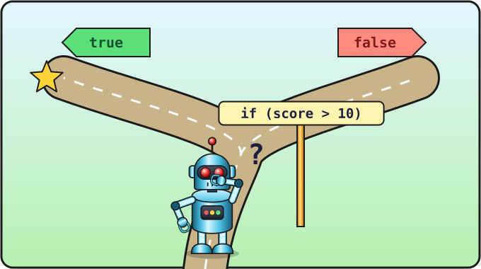

Lesson 9 of 16 ⏱ 45 minutes
Conditions
The snake crawls off the edge of the field. We need the program to be able to decide: if the snake is at the edge, then do something special. That's what the if command is for. With it we'll make magic portals: the snake crawls into one wall and comes out of the opposite one.
- find out what
trueandfalseare; - learn to compare numbers:
>,<,===and others; - write
ifandif … elseconditions; - join conditions with "and" (
&&) and "or" (||); - make portals at the edges of the field.
| 10 min | True and false: comparisons in the console |
| 10 min | if and else |
| 15 min | Portals in the game |
| 10 min | && and ||, tasks |

if condition is a fork in the road: if the answer is true, the program goes one way; if it is false, the other.True or false?
Open the console and ask the computer some questions:
5 > 3 2 > 7 10 === 10 10 === 11
To each question the computer answers true or false. Here are all the ways to compare:
| Sign | Question | Example |
|---|---|---|
> | greater? | 5 > 3 → true |
< | less? | 5 < 3 → false |
>= | greater or equal? | 20 >= 20 → true |
<= | less or equal? | 0 <= -1 → false |
=== | equal? | 7 === 7 → true |
!== | not equal? | 7 !== 7 → false |
= (one) means "put in the box". === (three) asks "are they equal?". Don't mix them up! In this course we always use three equals signs to compare.
If… then… else
let score = 12;
if (score > 10) {
console.log("Well done!");
}
In the round brackets after if is a question. If the answer is true, what's in the curly brackets runs. If it's false, it's skipped.
And with else you can say what to do when the answer is "no":
if (score > 10) {
console.log("Well done!");
} else {
console.log("Try again!");
}
Change score to 5 and check what gets printed. You can experiment in test.html.
Magic portals
The field goes from cell 0 to cell 19. The snake's head has left the field if:
head.x >= cells— it went past the right edge (x became 20);head.x < 0— it went past the left edge (x became -1);head.y >= cells— it went past the bottom edge;head.y < 0— it went past the top edge.
In each case we'll move the head to the opposite wall. Add the checks to the step function: after we create head, but before unshift.
function step() {
let head = { x: snake[0].x + dx, y: snake[0].y + dy };
if (head.x >= cells) {
head.x = 0;
}
if (head.x < 0) {
head.x = cells - 1;
}
if (head.y >= cells) {
head.y = 0;
}
if (head.y < 0) {
head.y = cells - 1;
}
snake.unshift(head);
snake.pop();
draw();
}
Save, refresh and watch: the snake reaches the right edge and comes out on the left. The portals work!
Change dx and dy at the start of the program to test all four portals.
cells is 20, but the last cell is number 19. So when coming out of the left wall we go to cell cells - 1, which is 19.
"And" and "or"
Sometimes you need to check two conditions at once:
&&— "and": true only if both conditions are true.||— "or": true if at least one condition is true.
let x = 5; console.log(x > 0 && x < 10); // true: x is greater than 0 AND less than 10 console.log(x < 0 || x > 3); // true: at least one is right console.log(x < 0 || x > 100); // false: both are wrong
The & symbol is Shift + 7, and | is Shift + \. Both are written twice. We'll need "and" and "or" in the very next lesson.
- In the console, check:
3 + 4 === 7,"cat" === "cat","cat" === "Cat". Why is the last one false? - Make the snake's head
"orange"when the snake is in the left half of the field (snake[0].x < 10), and"yellow"in the right half. Hint: in thedrawfunction create a variableheadColorand change it withif … else. - ⭐ In
test.htmlwrite a guessing game: the computer has a "secret" number in a variable, the player enters a guess withprompt, and the program answers "bigger", "smaller" or "you got it".
📄 The whole snake.html file after this lesson
<!DOCTYPE html>
<html>
<head>
<meta charset="utf-8">
<title>Snake</title>
</head>
<body>
<h1>Snake</h1>
<canvas id="game" width="400" height="400"></canvas>
<script>
let canvas = document.getElementById("game");
let ctx = canvas.getContext("2d");
let size = 20;
let cells = 20;
let snake = [
{ x: 10, y: 10 },
{ x: 9, y: 10 },
{ x: 8, y: 10 }
];
let apple = { x: 15, y: 10 };
let dx = 1;
let dy = 0;
function clearField() {
ctx.fillStyle = "black";
ctx.fillRect(0, 0, 400, 400);
}
function drawCell(x, y, color) {
ctx.fillStyle = color;
ctx.fillRect(x * size, y * size, size - 1, size - 1);
}
function draw() {
clearField();
drawCell(apple.x, apple.y, "red");
for (let i = 0; i < snake.length; i++) {
drawCell(snake[i].x, snake[i].y, "lime");
}
drawCell(snake[0].x, snake[0].y, "yellow");
}
function step() {
let head = { x: snake[0].x + dx, y: snake[0].y + dy };
if (head.x >= cells) {
head.x = 0;
}
if (head.x < 0) {
head.x = cells - 1;
}
if (head.y >= cells) {
head.y = 0;
}
if (head.y < 0) {
head.y = cells - 1;
}
snake.unshift(head);
snake.pop();
draw();
}
draw();
setInterval(step, 200);
</script>
</body>
</html>
Check yourself
- I know the difference between
=and===. - I can write
ifandif … else. - I understand when
&&gives true and when||does.